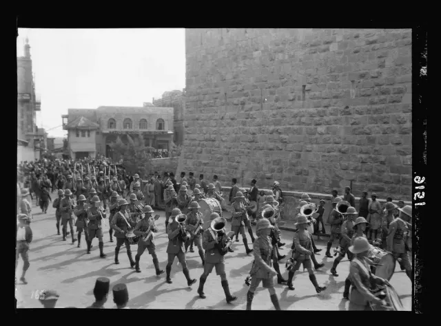
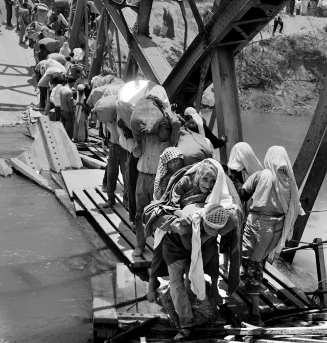

A record of the people killed in Gaza, the West Bank and Israel since October 7, 2023.
The sources count differently, so every number here carries its source and its date.
Drawn from the Gaza Ministry of Health, UN OCHA, B’Tselem, the Israeli Foreign Ministry, INSS, the IDF and The Lancet Global Health.
Every life is a universe
Day 1,084 of the war. Updated .
On October 7, 2023, Hamas-led fighters broke through the fence around Gaza and attacked towns, kibbutzim, army posts and a music festival in southern Israel.
They killed 1,195 people, most of them civilians, and took 251 hostages.
Fires detected in infrared. Satellite view of the Gaza Strip and southern Israel, October 7, 2023. Contains modified Copernicus Sentinel data (2023), processed by Pierre Markuse, via Wikimedia Commons, CC BY 2.0.
On October 7, 2023, 1,195 people were killed in Israel. Each square is one of them.
The deadliest day for Israelis since the state’s founding.
724 were Israeli civilians.
36 of the dead were children. 364 were killed at the Nova music festival.
373 were members of the security forces.
98 were foreign nationals and others.
251 people were taken hostage, and 8,730 injured.
Figures consolidated from the Israeli Foreign Ministry, INSS and B’Tselem.
Israel’s war on Gaza began the same day.
Palestinians killed in GazaRecorded by the Gaza Ministry of Health in the 1,084 days since October 7, 2023, as of .
175,030 Palestinians injured in GazaGaza Ministry of Health, to .
477 Israeli soldiers killed in GazaKilled in the ground operation from October 27, 2023, to . IDF, via The Times of Israel.
73,928 Palestinians killed in Gaza, according to the Gaza Ministry of Health.
Each dot is ten people killed in Gaza.
20,179 were children.
12,500 were women.
Gaza Ministry of Health, to October 7, 2025, its last breakdown of the dead by age and sex.
Nearly a third of the dead were reported in the first three months.
Deaths reported in Gaza each week since October 7, 2023.
From October to December 2023, 21,822 people were reported killed, about 254 a day.
In 2024, 23,719 deaths were reported, about 65 a day. No week passed without them.
In May, Israel launched its offensive on Rafah, where more than a million displaced people had sheltered.
During the truce, from January 19 to March 17, 2025, reported deaths fell to their lowest of the war so far.
It began with an exchange of hostages and prisoners.
After the war resumed on March 18, 2025, 18,617 more deaths were reported by October 9.
In August 2025, UN-backed experts confirmed famine in Gaza City. By , 2,615 people had been killed seeking food aid.
Deaths reported each week, which is not always the week they happened. Source: Gaza Ministry of Health, via Tech for Palestine.
Since the ceasefire of October 10, 2025, far fewer people have been killed each day in new attacks.
~66killed a day in new attacks during the resumed war, Mar 18 – Oct 9, 2025
~4killed a day in new attacks since the ceasefire
6,717 deaths have been added since the ceasefire. About one in five is a new killing.
New killings include 84 people who died later of their wounds.
The rest are people killed earlier, now being counted: bodies recovered from rubble and deaths added after review.
October counts reports from the 11th, the first after the ceasefire; the last month runs to September 24, 2026. Source: Gaza Ministry of Health daily breakdowns, via Tech for Palestine.
No figure is complete.
Each authority has its own scope, standard of proof and method. The Gaza Ministry of Health itself states thousands of dead remain under rubble.
Research in The Lancet Global Health estimated 75,200 violent deaths through January 2025. The Ministry’s count to the end of that month was 47,460.
Filled dots are counts; the hollow dot is an estimate. This site has not yet confirmed the study’s exact end date or its uncertainty range, so neither is drawn. The estimate leaves out deaths from starvation, disease and the collapse of health care.
The Ministry of Health has identified 72,835 of the dead by name.
A separate Ministry list, with each person’s name, age and sex. One square is 100 people, rounded to the nearest square.
21,637 were children: 12,803 boys and 8,834 girls.
47,800 were adults aged 18 to 59: 36,067 men and 11,733 women.
3,398 were 60 and over.
From the Ministry of Health’s list of dead identified by name, released through May 7, 2026; the list trails the overall total.
In the West Bank, killings have fallen while settler attacks have continued.
Israeli forces and settlers have killed 1,123 Palestinians in the occupied West Bank since October 7, 2023.
UN OCHA has recorded 4,655 settler attacks over the same period.
Attacks are counted as incidents and drawn on their own scale.
UN OCHA. October 2023 counts from the 7th. OCHA’s latest report in this data is from September 14, 2026, so September is partial.


Jerusalem, 1936: Matson Collection, Library of Congress. Allenby Bridge, 1967: UNRWA Archive. Gaza, 1987: Efi Sharir, CC BY 4.0. Washington, 1993: Vince Musi / The White House. All via Wikimedia Commons; others public domain.
Every number so far begins in 2023. The Palestinian American historian Rashid Khalidi starts the story in 1917. He argues it is best understood as a colonial war waged against the Palestinians, backed at every stage by the great power of the day.
In The Hundred Years’ War on Palestine (2020), Khalidi divides that century into six “declarations of war.” What follows summarizes his account in our own words.

The Balfour Declaration, November 2, 1917. UK Government, via Wikimedia Commons, public domain.
First, a national home promised by a great power
In November 1917, Britain promised the Zionist movement “a national home for the Jewish people” in Palestine, a country its armies had not yet finished conquering, where Arabs were roughly nine in ten of the population. In 1936 Palestinians launched a six-month general strike and then an armed revolt. Britain put it down over three years.
~5,000 Palestinians killed as Britain crushed the 1936–39 revolt

Palestinian refugees leaving Galilee for Lebanon, October–November 1948. Fred Csasznik, via Wikimedia Commons, public domain.
Second, partition and al-Nakba
In November 1947 the United Nations voted to partition Palestine, allotting more than half the land to a Jewish state when Jews were about a third of the population. What followed Palestinians call al-Nakba, “the catastrophe.”
15,000 Palestinians killed and 750,000+ expelled or fled, 1947–49

Palestinian refugees cross the wrecked Allenby Bridge into Jordan, 1967. UNRWA Archive, via Wikimedia Commons, public domain.
Third, occupation
In six days in June 1967, Israel took the West Bank, East Jerusalem and Gaza, along with Egypt’s Sinai and Syria’s Golan Heights. Hundreds of thousands of Palestinians were displaced, many of them refugees for the second time. The occupation that began that week has never ended.
300,000+ Palestinians displaced in 1967

Israeli tanks on the outskirts of Beirut, June 21, 1982. Israel Press and Photo Agency (I.P.P.A.), via Wikimedia Commons, CC BY 4.0.
Fourth, the siege of Beirut
In June 1982 Israel invaded Lebanon to destroy the Palestine Liberation Organization, and laid siege to West Beirut for ten weeks with American support.
~18,000 killed in Lebanon by September 1982, most of them civilians (Lebanese estimates)

Israeli soldiers face Palestinian protesters in the Gaza Strip, December 21, 1987. Efi Sharir, via Wikimedia Commons, CC BY 4.0.
Fifth, uprising, then Oslo
In December 1987 a mass uprising, the first intifada, spread from Gaza’s refugee camps across the occupied territories: strikes, boycotts, stone-throwing, and committees that ran daily life. Khalidi argues the 1993 Oslo Accords were the fifth declaration: limited self-rule for a Palestinian Authority, while Israel kept control of land, borders, water and Jerusalem.
1,100+ Palestinians and ~160 Israelis killed in the first intifada, 1987–93 (B’Tselem)

The separation barrier in the occupied West Bank, August 2004. Justin McIntosh, via Wikimedia Commons, CC BY 2.0.
Sixth, walls and a blockade
When talks collapsed in 2000, a second, far deadlier intifada followed. Israel began building a separation barrier, mostly inside the West Bank, which the International Court of Justice found unlawful in 2004. After Hamas won Palestinian elections in 2006, Israel imposed a land, sea and air blockade on the Strip that has held since 2007.
~3,000 Palestinians and ~1,000 Israelis killed in the second intifada, 2000–05. 2,251 Palestinians and 73 Israelis killed in 51 days in 2014 (UN).
A century of killing, on one scale.
The dead of each period, from the chapters before. The 1982 bar counts everyone killed in Lebanon.
Since October 7, 2023, the Gaza Ministry of Health has recorded 73,928 Palestinians killed in Gaza, more than all of these earlier tolls combined.
73,928
people killed in Gaza since October 7, 2023, according to the Gaza Ministry of Health, as of .
In the West Bank, UN OCHA has recorded 1,123 Palestinians killed. On October 7, 2023, 1,195 people were killed in Israel (Israeli Foreign Ministry, INSS, B’Tselem), and 477 Israeli soldiers have since been killed in Gaza (IDF).
Of the dead identified by name, 1,072 had not reached their first birthday. These are their names.